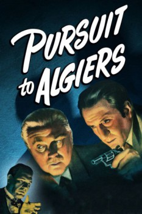

Country:United States, 65 minutes
Spoken languages:English
Genres:Mystery, Crime, Thriller, Adventure, Romance
Director(s):Roy William Neill
Writer(s):Leonard Lee
Video Codec:Unknown
Number: 713

Certification:
Storyline:
After the King of Rovenia has been assassinated, Holmes and Watson are engaged to escort his son to Europe via Algiers, aboard a transatlantic ocean liner which also carries a number of suspicious persons, any of whom may be involved in a plot to also assassinate him.
Cast:
Basil Rathbone (as Sherlock Holmes), Nigel Bruce (as Doctor Watson), Marjorie Riordan (as Sheila Woodbury), Rosalind Ivan (as Agatha Dunham), Morton Lowry (as Steward)
Medium: Media file,
Location: D:\Sherlock Holmes\Basil Rathbone\Sherlock Holmes In Pursuit to Algiers.mp4
Loaned: No
Aspect ratio: Unknown